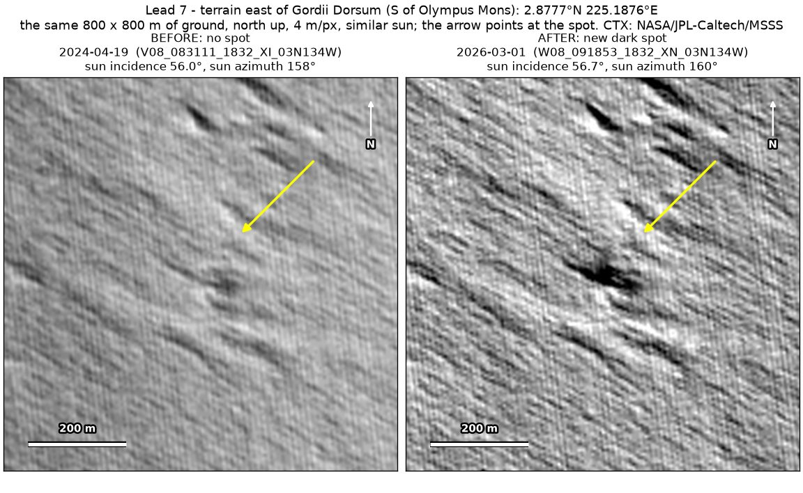
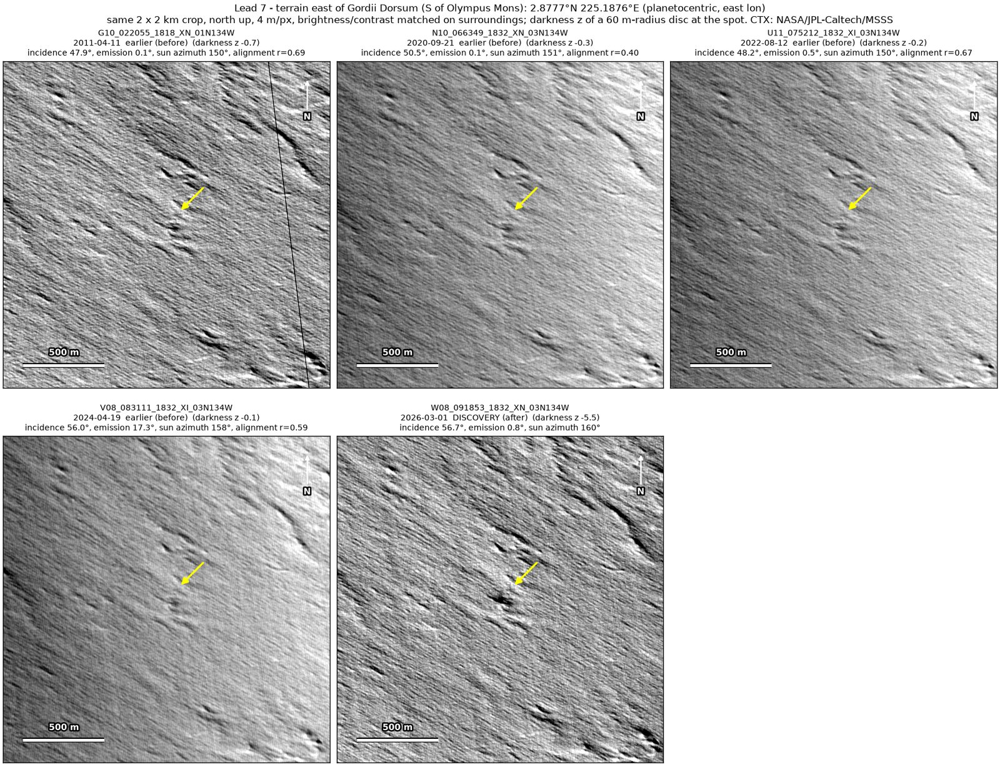
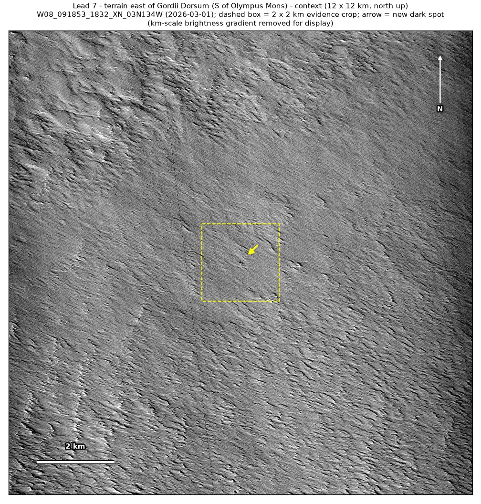
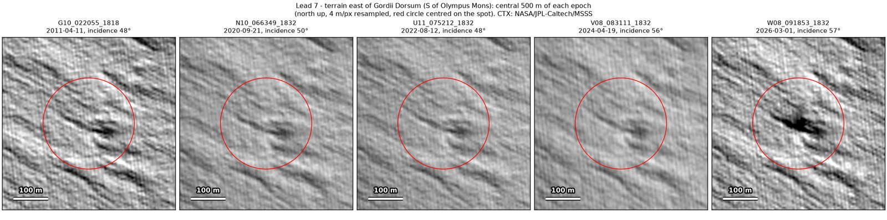

Professor of Mathematics
Paata Ivanisvili
Department of Mathematics, University of California, Irvine

← Possible new impact sites on Mars
Candidate 7: Ridged terrain east of Gordii Dorsum, south of Olympus Mons
Weak · roughly 20%

What changed. An elongated dark spot 60 to 80 m in size appeared on ridged terrain east of Gordii Dorsum between April 2024 and March 2026, on top of a faint dark mark that was already there; so far it is seen in one CTX image.
Why it may be a new impact. The darkening is real: the April 2024 image, taken under nearly the same sun as the March 2026 image, does not show it, and a new dark spot of this size could be the blast zone of a small new crater.
- Location
- 2.878° N, 225.188° E (134.812° W)
- Absent
- 11 April 2011, 21 September 2020, 12 August 2022 and 19 April 2024
- Present
- 1 March 2026
- Size
- Elongated dark spot 60 to 80 m in size, stretched along the ridges
- Confidence
- Weak candidate; roughly 20% that it is a new impact.
- Caveat
- It is rated weak because the faint mark beneath it was already visible in 2011, 2020 and 2022, in ridged terrain full of ridge shadows, because it is stretched along the ridges, and because only one image shows it. It could instead be wind darkening a small hollow, or shading made stronger by clearer air, since the April 2024 image was hazy and taken at a 17° slant. It lies outside every footprint of the high-resolution HiRISE camera; the nearest ends 15 km away. Like every candidate here, it is unconfirmed: see the caveat.


